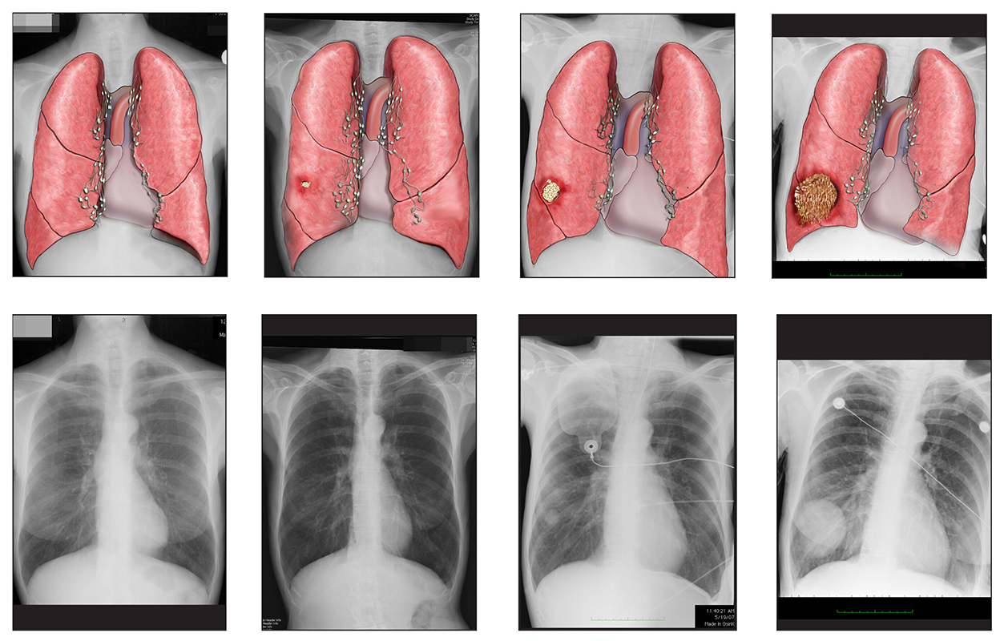

Kasarla's Blog
This blog goes beyond tech, offering a space to share my thoughts on technology, life, and more. Along with deep dives into AI, machine learning, coding tips, and app development, I explore topics like personal growth through tech, how emerging innovations impact daily life, career advice, and maintaining work-life balance. Expect a mix of tech insights and reflections on life's broad
About Me
Hello! I’m Kasarla Uday Kumar, a Computer Science graduate with a specialization in AI and Machine Learning from Kalasalingam University. My journey through technology has led me to explore various fields, including Python programming, MySQL, HTML, CSS, and machine learning. I have worked on projects like brain stroke detection and sentence auto-completion, which have fueled my passion for innovative solutions.
This blog serves as a platform where I share insights and updates related to my interests in technology and development. Whether you’re here to learn about online booking apps, delve into coding tips, or explore machine learning concepts, you can expect to find informative articles, tutorials, and project updates. Join me as I delve into the ever-evolving world of tech and share valuable knowledge along the way!
Brain Stroke Detection with AI
Summary: This project focuses on using AI and machine learning to predict brain strokes early, helping doctors provide timely treatment and saving lives.

Content:
In my Brain Stroke Detection project, I explored the use of various machine learning models like Support Vector Machines (SVM) and Random Forest to classify patients based on risk factors such as age, hypertension, and heart disease. The model was trained on a dataset of medical records, aiming to predict the likelihood of a stroke occurring.
By improving the model's accuracy, healthcare professionals can receive valuable insights for early detection and prevention. This project not only challenged me to apply AI techniques but also deepened my understanding of healthcare applications in machine learning.
Lung Cancer Detection Using Machine Learning
Summary: This project leverages machine learning techniques to assist in the early detection of lung cancer, potentially saving lives through timely intervention.

Content:
In this project, I developed a predictive model for lung cancer detection by analyzing medical images and patient data. Using Convolutional Neural Networks (CNN) for image classification and decision trees for analyzing risk factors like smoking history, age, and genetic predisposition, the model aims to detect early signs of lung cancer.
By focusing on high-risk individuals and detecting cancer at an early stage, the model enhances diagnosis accuracy and provides valuable insights to healthcare providers. This project not only expanded my skills in image processing and data analytics but also demonstrated the potential of AI to transform the field of medical diagnostics.
Auto-Complete Sentence Project
Summary: A project that aimed to develop an auto-completion system based on user input to enhance text productivity.

Content: I created a system that predicts the next word in a sentence using Natural Language Processing (NLP) techniques. This project demonstrates my ability to apply machine learning in real-world applications, improving typing speed and accuracy.